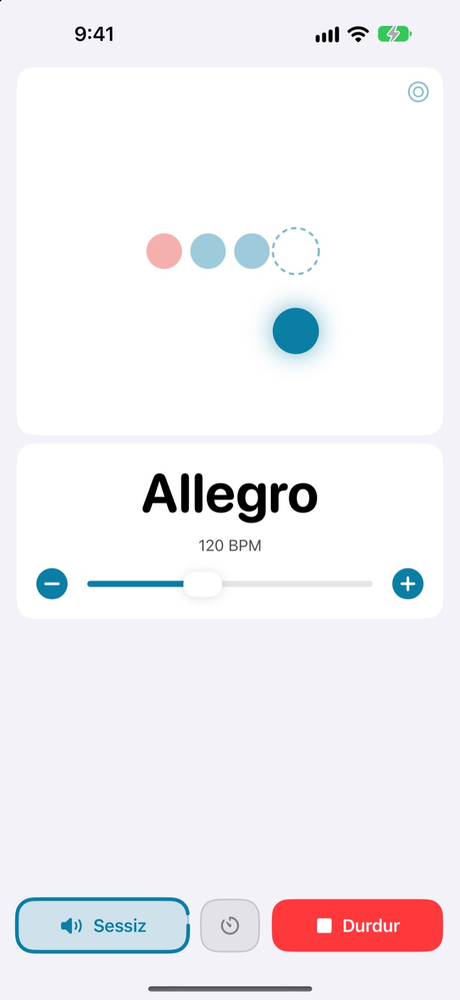
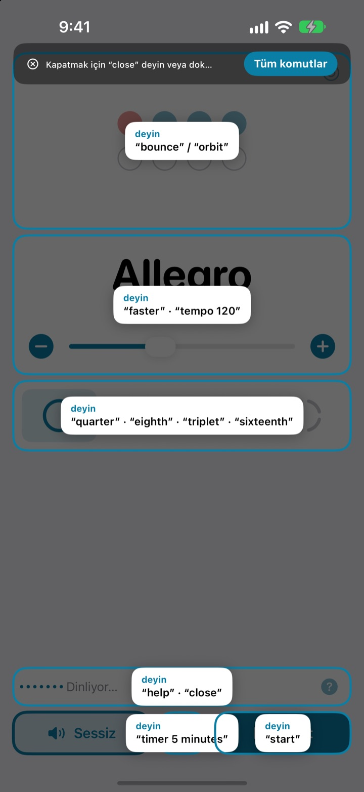
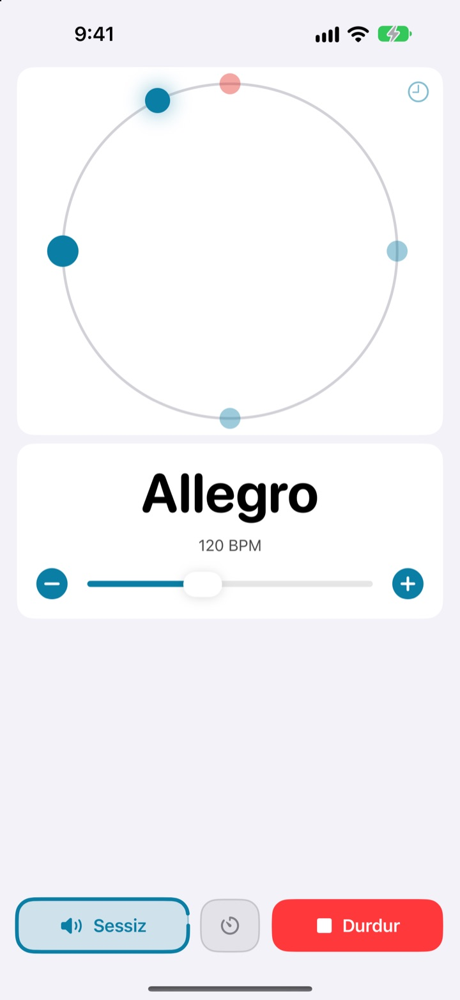
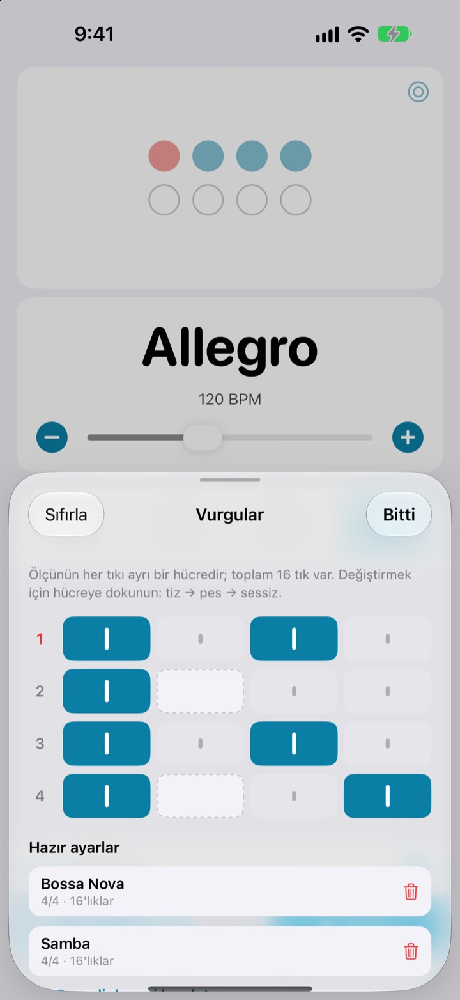

Eller enstrümanda,
tempo sesinizde
Cümlenin ortasında faster deyin, metronom hızlansın. Ekrana uzanmak da, tempoyu değiştirmek için durmak da yok. Komutlar İngilizce sözcüklerle söylenir.
Tam metronom ve sesli denetim ücretsiz.

Sesli deneyin
Bir ifadeye dokunun ya da mikrofonu açıp İngilizce söyleyin. Sesi açın, metronom tıklıyor.
Tempoyu biraz değiştireyim derken akışı kaybettiniz mi?
Yayı bırakırsınız, penayı dişlerinizin arasına alırsınız, ekrana iki kez dokunursunuz ve az önce yakaladığınız his gider. Not My Tempo, tempoyu tek bir sözcükle değiştirir; siz çaldığınız duruşu hiç bozmazsınız.
Söyleyin, tık takip etsin
start, faster, tempo 120 gibi kısa İngilizce sözcükler. Uygulama açılır açılmaz dinler; iOS Sesle Denetim’i ya da bir erişilebilirlik ayarını açmanız gerekmez.
Bir komutu mu unuttunuz? help deyin, kullanabileceğiniz tüm ifadeler ekranda belirsin.

Vuruşu gözle de izleyin
Zıplama, yörünge veya halka arasından seçin. Ölçünün ilk vuruşu kırmızı görünür ve daha güçlü tıklar.
Yörüngede ritme uyarak dokunun, ne kadar isabetli vurduğunuzu görün.

Her şarkı için vurguları kaydedin
Ölçüdeki her tıkı tiz, pes veya sessiz yapın ve hazır ayar olarak saklayın. Bossa nova ya da samba kalıbını bir kez kurun, sonra yalnızca seçin. (Pro)

Üç adımda başlayın
- 1
Uygulamayı açın
Hemen dinlemeye başlar.
- 2
Mikrofona izin verin
Mikrofon ve konuşma tanıma iznini yalnızca bir kez sorar.
- 3
Konuşun ya da dokunun
Her komutun ekranda bir düğmesi de var.
Neler söyleyebilirsiniz
- start · stop
- başlat, durdur
- faster · slower
- 5 BPM hızlandır veya yavaşlat
- up · down
- 1 BPM hızlandır veya yavaşlat
- tempo 120
- doğrudan o tempoya geç
- double · half
- iki kat hızlı, yarı hızda
- three beats
- ölçüyü değiştir
- quarter · eighth · triplet · sixteenth
- 4'lük, 8'lik, üçleme, 16'lık
- louder · quieter · mute
- tık sesini artır, azalt, kapat
- volume 60
- ses düzeyini yüzde olarak ayarla
- bounce · orbit
- vuruş görünümünü değiştir
- timer 5 minutes
- çalışma zamanlayıcısı kur
- practice
- çalışırken tempoyu adım adım artır (Pro)
- tune
- akort aletini aç (Pro)
- help
- tüm komutları göster
- close · done
- açık paneli kapat
Konuşma tanıma İngilizce (ABD) çalışır, bu yüzden komutlar İngilizce sözcüklerle söylenir. Uygulama Türkçedir ve her komut dokunarak da kullanılabilir.
Metronom ücretsiz, daha fazlası için Pro
Ücretsiz
- Tüm sesli komutlar
- 1 ile 8 vuruş arası ölçüler, vurgulu ilk vuruş
- 4'lük, 8'lik, üçleme ve 16'lık alt bölümler
- Zıplama, yörünge ve halka görünümleri
- Tempo vurma ve zamanlama denetimi
- Çalışma zamanlayıcısı
Not My Tempo Pro
- Çalışma modu: hedef tempoya ulaşana kadar birkaç ölçüde bir birkaç BPM ekler
- Şarkı başına hazır ayarlarla vurgu düzenleyici
- Kromatik akort aleti
Ücretsiz denemeli yıllık abonelik ya da tek seferlik ömür boyu satın alım
Sesli denetim ve erişilebilirlik özellikleri herkes için ücretsiz kalacak. Uygulamayı Pro çıkmadan önce satın aldıysanız tüm Pro özellikleri zaten sizin.
Sık sorulan sorular
Türkçe konuşabilir miyim?
Konuşma tanıma İngilizce (ABD) çalışır, bu yüzden komutlar start ve faster gibi kısa İngilizce sözcüklerdir. Çabucak alışırsınız; ayrıca her komut düğmeyle de kullanılabilir.
Uygulama beni duymuyor.
Mikrofon durumunun Dinliyor olarak göründüğünü kontrol edin. Kapalıysa Dinle’ye dokunun. Gürültülü bir odada ya da hoparlörden yüksek sesle çalarken kulaklık kullanın; böylece tık sesi mikrofona karışmaz.
Dinleme kendiliğinden kapandı.
Pil tasarrufu için birkaç dakika komut gelmezse dinleme kapanır. Yeniden açmak için Dinle’ye dokunun.
Tempo yarı ya da iki kat çıktı.
Düzeltmek için double veya half deyin.
Akort aletini nasıl kullanırım?
tune deyin ya da tempo kartındaki dalga düğmesine dokunun. Bir nota çalın; gösterge yeşil bölgeye girdiğinde akort tamamdır. Çıkmak için close deyin.
Zaten iOS Sesle Denetim kullanıyorum.
Uygulamanın kendi mikrofonunu kapatın ve düğme adlarıyla yönetin. Her denetimin bir VoiceOver etiketi vardır.
Sesim bir yere gönderiliyor mu?
Hayır. Konuşma cihazınızda tanınır; asla kaydedilmez, saklanmaz veya gönderilmez. Metronom, sesli denetim ve akort aleti internet olmadan çalışır.
Aboneliği nasıl iptal ederim?
Ayarlar > Apple Hesabı > Abonelikler bölümünden. Yıllık plan, geçerli dönemin bitiminden en az 24 saat önce iptal edilmedikçe otomatik olarak yenilenir. Ömür boyu seçeneği tek seferlik bir ödemedir.
Soru ve görüşleriniz için leeo@kakao.com adresine yazın.